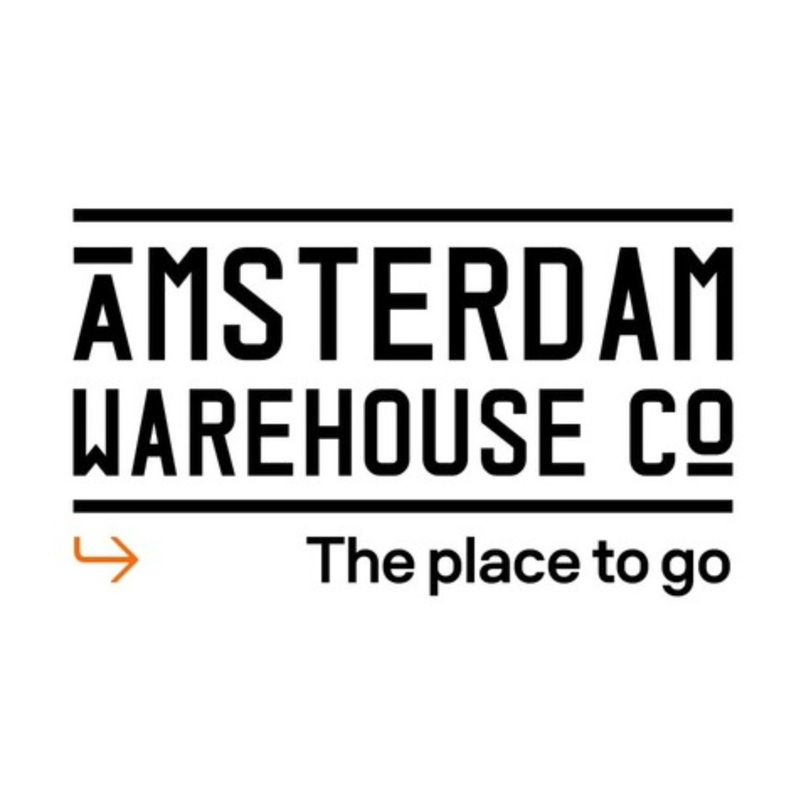

🚀 AWC Tool App
📍 Slego 1a, 1046 BM Amsterdam
📍 Conakryweg 6, 1047 HS Amsterdam
📧 info@amsterdamwarehouse.com
📞 +31 (0)20-3081287
📍 Conakryweg 6, 1047 HS Amsterdam
📧 info@amsterdamwarehouse.com
📞 +31 (0)20-3081287
